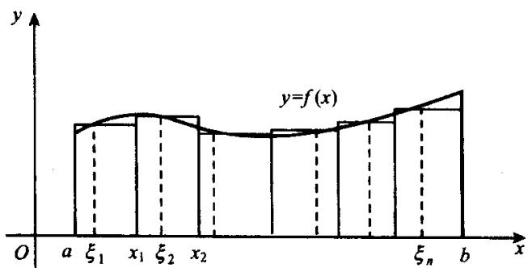

§7.1 定积分的概念设函数 f ( x ) f(x) [ a , b ] [a, b] y = f ( x ) y = f(x) x = a , x = b , y = 0 x = a, x = b, y = 0
由于我们只会计算直边图形的面积而尚不会计算曲边图形的面积, 我们用如下方法计算曲边梯形的面积 S. 先把区间 [ a , b ] [a, b]
分成 n 个小区间 [ x k − 1 , x k ] , k = 1 , ⋯ , n \left[x_{k-1}, x_{k}\right], k=1, \cdots, n y = f ( x ) y=f(x) [ x k − 1 , x k ] \left[x_{k-1}, x_{k}\right] ξ k \xi_{k} f ( ξ k ) f(\xi_{k}) Δ x k = x k − x k − 1 \Delta x_{k}=x_{k}-x_{k-1} S k = f ( ξ k ) Δ x k S_{k}=f(\xi_{k})\Delta x_{k} S k S_{k}
我们就把这个和数作为曲边梯形面积 S S

image 图7.1.1
从图中可以看出, 分点愈多, 相邻分点的距离愈小, 则由(7.1.1)式所给出的和数就愈接近于面积 S S S S
如果已知变速运动的速度函数 v ( t ) v(t) a a b b v ( t ) v(t) f ( x ) f(x)
形象的陈述很容易为人接受,特别是被缺乏全面训练的人所接受.但是,形象的描述往往不够深刻,也无法用来进行理论推导和论证.因此,必须将定积分的概念上升到理论的高度来表达.在微积分发展的历史上也正是这样来进行的.下面,我们就来给出定积分的分析定义.
在区间 [ a , b ] [a, b] n + 1 n + 1
记 T = { x k ∣ k = 0 , 1 , … , n } T = \{x_{k} \mid k = 0,1,\dots ,n\} [ a , b ] [a,b] [ a , b ] [a,b] [ a , b ] [a,b] n n [ x k − 1 , x k ] , k = 1 , … , n . [x_{k - 1},x_k],k = 1,\dots ,n. k k Δ x k = x k − x k − 1 \Delta x_{k} = x_{k} - x_{k - 1}
并称之为网 T 的直径.
设函数 f ( x ) f(x) [ a , b ] [a, b] [ a , b ] [a, b] ξ k ∈ [ x k − 1 , x k ] \xi_{k} \in [x_{k-1}, x_{k}] k = 1 , ⋯ , n k = 1, \cdots, n f ( x ) f(x) ξ k \xi_{k}
定义7.1.1 设函数 f ( x ) f(x) [ a , b ] [a, b] I I ε & g t ; 0 \varepsilon > 0 概念定义 定义7.1.1 设函数 f ( x ) f(x) [ a , b ] [a, b] I I ε > 0 \varepsilon > 0 δ > 0 \delta > 0 ∥ T ∥ < δ \|T\| < \delta { ξ k } \{\xi_k\}
则称函数 f ( x ) f(x) [ a , b ] [a, b] I I f ( x ) f(x) [ a , b ] [a, b]
其中的 f ( x ) f(x) f ( x ) d x f(x)\mathrm{d}x x x a a b b
定积分与不定积分的一个主要区别在于,不定积分的结果是一族函数而定积分的结果是一个数.
定理7.1.1 函数 f ( x ) f(x) [ a , b ] [a, b] f ( x ) f(x) [ a , b ] [a, b] 核心定理 定理7.1.1 函数 f ( x ) f(x) [ a , b ] [a, b] f ( x ) f(x) [ a , b ] [a, b]
证 因为 f ( x ) f(x) [ a , b ] [a, b] ε 0 = 1 \varepsilon_{0}=1 δ & g t ; 0 \delta>0 证明 证 因为 f ( x ) f(x) [ a , b ] [a, b] ε 0 = 1 \varepsilon_{0}=1 δ > 0 \delta>0 ∥ T ∥ < δ \|T\|<\delta ξ k ∈ [ x k − 1 , x k ] , k = 1 , ⋯ , n \xi_{k}\in[x_{k-1},x_{k}], k=1,\cdots,n
取 n n b − a n < δ \frac{b - a}{n} < \delta [ a , b ] [a, b] n n T = { x i } T = \{x_i\} j , 1 leqslant j leqslant n j, 1 \leqslant j \leqslant n ξ k = x k , k ≠ j \xi_k = x_k, k \neq j
由于(7.1.4)式右端为常数而左端的 ξ j \xi_{j} [ x j − 1 , x j ] [x_{j-1}, x_{j}] f ( x ) f(x) [ x j − 1 , x j ] [x_{j-1}, x_{j}] j j f ( x ) f(x) [ a , b ] [a, b]
此外,从定积分的定义可以看出,定积分的值与积分变量无关,即有
因此,在进行运算或论证时,可随时根据需要而改换积分变量.
在定义中我们总假定 a < b a < b
定积分的这种概念是由黎曼首先引入,所以,当有必要与其他的可积性相区别时,我们将把这种积分称之为黎曼积分.
§7.2 可积的充分必要条件设函数 f ( x ) f(x) [ a , b ] [a, b] T = { x k } T = \{x_{k}\} [ a , b ] [a, b] [ x k − 1 , x k ] [x_{k-1}, x_{k}] k = 1 , ⋯ , n k = 1, \cdots, n
作和式
并分别称之为函数 f ( x ) f(x) T T f ( x ) f(x) T T f ( x ) f(x) T T
定理 7.2.1 当在网 T 中加入新的分点时, 上和不增而下和不减, 亦即当把加入新的分点后的网记为 T ' T' 核心定理 定理 7.2.1 当在网 T 中加入新的分点时, 上和不增而下和不减, 亦即当把加入新的分点后的网记为 T ' T' s ( T ) leqslant s ( T ' ) leqslant S ( T ' ) leqslant S ( T ) s(T) \leqslant s(T') \leqslant S(T') \leqslant S(T)
不妨设网 T ' T' T T x ' ∈ ( x j − 1 , x j ) x' \in (x_{j-1}, x_j)
于是有 M j 1 leqslant M j , M j 2 leqslant M j M_{j1} \leqslant M_j, M_{j2} \leqslant M_j
由于 S ( T ) S(T) S ( T ' ) S(T')
同理可证 s ( T ' ) geqslant s ( T ) s(T') \geqslant s(T)
定理7.2.2 设 T 1 T_{1} T 2 T_{2} [ a , b ] [a, b] s ( T 1 ) leqslant S ( T 2 ) s(T_{1}) \leqslant S(T_{2}) 核心定理 定理7.2.2 设 T 1 T_{1} T 2 T_{2} [ a , b ] [a, b] s ( T 1 ) leqslant S ( T 2 ) s(T_{1}) \leqslant S(T_{2})
证 令 T = T 1 ∪ T 2 T = T_{1} \cup T_{2} 证明 证 令 T = T 1 ∪ T 2 T = T_{1} \cup T_{2}
定理7.2.2表明，一切下和的集合 { s } \{s\} underline I \underline{I} { S } \{S\} 核心定理 定理7.2.2表明，一切下和的集合 { s } \{s\} underline I \underline{I} { S } \{S\} I ¯ \overline{I} underline I leqslant I ¯ \underline{I} \leqslant \overline{I} underline I \underline{I} I ¯ \overline{I} f ( x ) f(x) [ a , b ] [a, b]
定理7.2.3(可积的第一充分必要条件）有界函数 f ( x ) f(x) [ a , b ] [a, b] 核心定理 定理7.2.3(可积的第一充分必要条件）有界函数 f ( x ) f(x) [ a , b ] [a, b] lim ∥ T ∥ → 0 ( S ( T ) − s ( T ) ) = 0 \lim_{\|T\| \to 0}(S(T) - s(T)) = 0 ε > 0 \varepsilon > 0 δ > 0 \delta > 0 ∥ T ∥ < δ \|T\| < \delta
证 必要性. 设函数 f ( x ) f(x) [ a , b ] [a, b] I I ε & g t ; 0 \varepsilon > 0 证明 证 必要性. 设函数 f ( x ) f(x) [ a , b ] [a, b] I I ε > 0 \varepsilon > 0 δ > 0 \delta > 0 [ a , b ] [a, b] T = { x k } 0 leqslant k leqslant n T = \{x_k\}_{0 \leqslant k \leqslant n} ∥ T ∥ < δ \| T \| < \delta
其中的 ξ k ∈ [ x k − 1 , x k ] ( k = 1 , ⋯ , n ) \xi_{k}\in[x_{k-1},x_{k}](k=1,\cdots,n)
在(7.2.1)式中分别对 ξ k \xi_{k} [ x k − 1 , x k ] [x_{k-1}, x_{k}] k = 1 , ⋯ , n k = 1, \cdots, n
由此即得
充分性. 由充分性条件知, 对于任给的 ε > 0 \varepsilon > 0 δ > 0 \delta > 0 [ a , b ] [a, b] T = { x k } 0 leqslant k leqslant n T = \{x_k\}_{0 \leqslant k \leqslant n} ∥ T ∥ < δ \| T \| < \delta
按上下积分的定义有
再由 ε > 0 \varepsilon > 0 I ¯ = underline I \overline{I} = \underline{I} I = I ¯ = underline I I = \overline{I} = \underline{I} ∥ T ∥ < δ \|T\| < \delta
从而有
故得
亦即有
按定义知 f ( x ) f(x) [ a , b ] [a, b] I I
对于区间 [ a , b ] [a, b] T = { x k } 0 leqslant k leqslant n T = \{x_k\}_{0 \leqslant k \leqslant n} ω k = M k − m k geqslant 0 \omega_k = M_k - m_k \geqslant 0 f ( x ) f(x) [ x k − 1 , x k ] [x_{k-1}, x_k]
必要条件可叙述为
这种形式用起来很方便.
不难看出,为使(7.2.3)式成立,或者当 ∥ T ∥ \|T\| ω k \omega_{k} ω k \omega_{k} ω k \omega_{k} Δ x k \Delta x_{k}
定理 7.2.4(可积的第二充分必要条件) 有界函数 f ( x ) f(x) [ a , b ] [a, b] η & g t ; 0 \eta > 0 核心定理 定理 7.2.4(可积的第二充分必要条件) 有界函数 f ( x ) f(x) [ a , b ] [a, b] η > 0 \eta > 0 σ > 0 \sigma > 0 δ > 0 \delta > 0 ∥ T ∥ < δ \|T\| < \delta ω k ' > η \omega_{k'} > \eta ∑ k ' Δ x k ' < σ \sum_{k'} \Delta x_{k'} < \sigma
证 必要性. 对于任给的 η & g t ; 0 \eta > 0 σ & g t ; 0 \sigma > 0 ε = η σ \varepsilon = \eta \sigma 证明 证 必要性. 对于任给的 η > 0 \eta > 0 σ > 0 \sigma > 0 ε = η σ \varepsilon = \eta \sigma f ( x ) f(x) [ a , b ] [a, b] δ > 0 \delta > 0 ∥ T ∥ < δ \|T\| < \delta
于是有
所以
其中 ω k ' > η \omega_{k'} > \eta ∑ k ' \sum_{k'} ω k ' > η \omega_{k'} > \eta
充分性. 对于任给的 ε > 0 \varepsilon > 0 η = ε 2 ( b − a ) , σ = ε 2 ( Ω + 1 ) \eta = \frac{\varepsilon}{2(b - a)}, \sigma = \frac{\varepsilon}{2(\Omega + 1)} Ω \Omega f ( x ) f(x) [ a , b ] [a, b] ω k ∗ leqslant η \omega_{k^*} \leqslant \eta ∑ k ∗ \sum_{k^*} ω k ∗ leqslant η \omega_{k^*} \leqslant \eta δ > 0 \delta > 0 ∥ T ∥ < δ \|T\| < \delta
从而有
从而由定理7.2.3知 f ( x ) f(x) [ a , b ] [a,b]
利用定理 7.2.3 和定理 7.2.4, 可以证明如下的结果.
定理7.2.5 下列三类函数都是可积的： 核心定理
定理7.2.5 下列三类函数都是可积的：
区间 [ a , b ] [a, b] 在 [ a , b ] [a, b] [ a , b ] [a, b]
证 (i) 设函数 f ( x ) f(x) [ a , b ] [a, b] ε & g t ; 0 \varepsilon > 0 f ( x ) f(x) [ a , b ] [a, b] 证明 证 (i) 设函数 f ( x ) f(x) [ a , b ] [a, b] ε > 0 \varepsilon > 0 f ( x ) f(x) [ a , b ] [a, b] δ > 0 \delta > 0 x 1 , x 2 ∈ [ a , b ] x_1, x_2 \in [a, b] | x 1 − x 2 | < δ |x_1 - x_2| < \delta
对于满足 ∥ T ∥ < δ \| T\| < \delta T = { x k } 0 leqslant k leqslant n T = \{x_{k}\}_{0\leqslant k\leqslant n}
其中 M k , m k M_{k}, m_{k} f ( x ) f(x) [ x k − 1 , x k ] [x_{k-1}, x_{k}]
由定理7.2.3知 f ( x ) f(x) [ a , b ] [a,b]
设函数 f ( x ) f(x) [ a , b ] [a, b] h h x ' 1 , x ' 2 , ⋯ , x ' h x'_1, x'_2, \cdots, x'_h a = x ' 0 < x ' 1 < x ' 2 < ⋯ < x ' h < x ' h + 1 = b a = x'_0 < x'_1 < x'_2 < \cdots < x'_h < x'_{h+1} = b 对于任给的 η > 0 \eta > 0 σ > 0 \sigma > 0
对每个 j ∈ { 1 , 2 , ⋯ , h } j \in \{1, 2, \cdots, h\} ( x ' j − δ 1 , f ( x ' j − δ 1 ) ) (x'_{j} - \delta_{1}, f(x'_{j} - \delta_{1})) ( x ' j + δ 1 , f ( x ' j + δ 1 ) ) (x'_{j} + \delta_{1}, f(x'_{j} + \delta_{1})) y = g j ( x ) y = g_{j}(x)
其中 Δ j = ( x ' j − δ 1 , x ' j + δ 1 ) \Delta_j = (x'_j - \delta_1, x'_j + \delta_1) F ( x ) F(x) [ a , b ] [a, b] δ 2 > 0 \delta_2 > 0 x 1 , x 2 ∈ [ a , b ] x_1, x_2 \in [a, b] | x 1 − x 2 | < δ 2 |x_1 - x_2| < \delta_2
令 δ = min { δ 1 , δ 2 } \delta = \min \{\delta_1, \delta_2\} ∥ T ∥ < δ \|T\| < \delta f ( x ) f(x) Δ k \Delta_k η \eta ω k ' > η \omega_{k'} > \eta
由定理7.2.4知 f ( x ) f(x) [ a , b ] [a,b]
不妨设 f ( x ) f(x) [ a , b ] [a, b] f ( a ) = f ( b ) f(a) = f(b) f ( x ) f(x) [ a , b ] [a, b] f ( a ) < f ( b ) f(a) < f(b) 由于 f ( x ) f(x) [ a , b ] [a, b] T = { x k } 0 leqslant k leqslant n T = \{x_k\}_{0 \leqslant k \leqslant n} ω k = f ( x k ) − f ( x k − 1 ) \omega_k = f(x_k) - f(x_{k-1})
对于任给的 ε > 0 \varepsilon > 0 δ = ε f ( b ) − f ( a ) \delta = \frac{\varepsilon}{f(b) - f(a)} ∥ T ∥ < δ \|T\| < \delta
由定理7.2.3知 f ( x ) f(x) [ a , b ] [a,b]
例 7.2.1 求证黎曼函数 R ( x ) R(x) [ 0 , 1 ] [0,1] 经典例题 例 7.2.1 求证黎曼函数 R ( x ) R(x) [ 0 , 1 ] [0,1]
证 黎曼函数定义如下： 证明
证 黎曼函数定义如下：
在第二章中我们已经证明过,对于任意 x 0 ∈ [ 0 , 1 ] x_0 \in [0,1] lim x → x 0 R ( x ) = 0 \lim_{x \to x_0} R(x) = 0
对任何 η > 0 \eta > 0 σ > 0 \sigma > 0 q < 1 η q < \frac{1}{\eta}
由于满足 q < 1 η q < \frac{1}{\eta} p q ∈ [ 0 , 1 ] \frac{p}{q} \in [0,1] 0 leqslant p leqslant q 0 \leqslant p \leqslant q p q \frac{p}{q} x ' 1 , ⋯ , x ' h x'_{1}, \cdots, x'_{h}
取 δ = σ 2 h \delta = \frac{\sigma}{2h} ∥ T ∥ < δ \|T\| < \delta ω k ' > η \omega_{k'} > \eta 2 h 2h
由定理7.2.4知 R ( x ) R(x)
同理可证, 黎曼函数 R ( x ) R(x) [ a , b ] [a, b] R ( x ) R(x)
的达布下和 s = 0 s = 0
§7.3 定积分的性质本节集中介绍定积分的各种性质,它们对于计算积分和证明与积分有关的题目是非常有用的.
定理7.3.1 设函数 f ( x ) f(x) g ( x ) g(x) [ a , b ] [a, b] λ \lambda 核心定理 定理7.3.1 设函数 f ( x ) f(x) g ( x ) g(x) [ a , b ] [a, b] λ \lambda λ f ( x ) , f ( x ) ± g ( x ) \lambda f(x), f(x) \pm g(x) [ a , b ] [a, b]
∫ a b λ f ( x ) d x = λ ∫ a b f ( x ) d x ; \int_{a}^{b}\lambda f(x)\mathrm{d}x = \lambda \int_{a}^{b}f(x)\mathrm{d}x;
证 (i) 比较简单, 这里只证(ii). 记 证明
证 (i) 比较简单, 这里只证(ii). 记
对于任给的 ε > 0 \varepsilon > 0 δ > 0 \delta > 0 ∥ T ∥ < δ \|T\| < \delta ξ k ∈ [ x k − 1 , x k ] \xi_{k} \in [x_{k-1}, x_{k}] k = 1 , ⋯ , n k = 1, \cdots, n
从而当 ∥ T ∥ < δ \| T\| < \delta
按定义知 f ( x ) ± g ( x ) f(x) \pm g(x) [ a , b ] [a, b]
定理7.3.2 设 a & l t ; c & l t ; b a < c < b 核心定理 定理7.3.2 设 a < c < b a < c < b
若 f ( x ) f(x) [ a , b ] [a, b] f ( x ) f(x) [ a , c ] [a, c] [ c , b ] [c, b] 若 f ( x ) f(x) [ a , c ] [a, c] [ c , b ] [c, b] f ( x ) f(x) [ a , b ] [a, b]
证 (i) 对于任给的 ε & g t ; 0 \varepsilon > 0 f ( x ) f(x) [ a , b ] [a, b] δ & g t ; 0 \delta > 0 证明 证 (i) 对于任给的 ε > 0 \varepsilon > 0 f ( x ) f(x) [ a , b ] [a, b] δ > 0 \delta > 0 [ a , b ] [a, b] T = { x k } 0 leqslant k leqslant n T = \{x_k\}_{0 \leqslant k \leqslant n} ∥ T ∥ < δ \| T \| < \delta
对于 [ a , c ] [a, c] T 1 T_{1} [ c , b ] [c, b] T 2 , T = T 1 ∪ T 2 T_{2}, T = T_{1} \cup T_{2} [ a , b ] [a, b] ∥ T 1 ∥ < δ , ∥ T 2 ∥ < δ \| T_{1} \| < \delta, \| T_{2} \| < \delta ∥ T ∥ < δ \| T \| < \delta c c T T n + 1 n + 1 h h
由上节定理7.2.3知 f ( x ) f(x) [ a , c ] [a, c] [ c , b ] [c, b]
对于区间 [ a , b ] [a, b] T T T ' = T ∪ { c } T' = T \cup \{c\} T 1 = T ' ∩ [ a , c ] T_1 = T' \cap [a, c] T 2 = T ' ∩ [ c , b ] T_2 = T' \cap [c, b] T 1 T_1 T 2 T_2 [ a , c ] [a, c] [ c , b ] [c, b] f ( x ) f(x) [ a , c ] [a, c] [ c , b ] [c, b]
则有
又因 f ( x ) f(x) [ a , b ] [a, b]
由(7.3.3)式和(7.3.4)式便得
对于任给的 η > 0 \eta > 0 σ > 0 \sigma > 0 f ( x ) f(x) [ a , c ] [a, c] [ c , b ] [c, b] δ 1 > 0 \delta_1 > 0 δ 2 > 0 \delta_2 > 0 [ a , c ] [a, c] T 1 = { x ' k } T_1 = \{x'_k\} [ c , b ] [c, b] T 2 = { x ' ' k } T_2 = \{x''_k\} ∥ T 1 ∥ < δ 1 , ∥ T 2 ∥ < δ 2 \| T_1 \| < \delta_1, \| T_2 \| < \delta_2 η \eta 令 δ = min { δ 1 , δ 2 , σ 3 } \delta = \min \{\delta_1, \delta_2, \frac{\sigma}{3}\} [ a , b ] [a, b] T T T ' = T ∪ { c } T' = T \cup \{c\} T 1 = T ' ∩ [ a , c ] T_1 = T' \cap [a, c] T 2 = T ' ∩ [ c , b ] T_2 = T' \cap [c, b] T 1 T_1 T 2 T_2 [ a , c ] [a, c] [ c , b ] [c, b] ∥ T ∥ < δ \| T \| < \delta ∥ T 1 ∥ < δ leqslant δ 1 \| T_1 \| < \delta \leqslant \delta_1 ∥ T 2 ∥ < δ leqslant δ 2 \| T_2 \| < \delta \leqslant \delta_2 T T c c T 1 T_1 T 2 T_2 T T η \eta
按定理7.2.4知 f ( x ) f(x) [ a , b ] [a,b]
此外,我们指出,当(7.3.1)式中的三个积分都存在时,对任意的 a,b,c,(7.3.1)式都成立,即不必要求 a<c<b.
定理7.3.3 若 f ( x ) f(x) g ( x ) g(x) [ a , b ] [a, b] f ( x ) g ( x ) f(x)g(x) [ a , b ] [a, b] 核心定理 定理7.3.3 若 f ( x ) f(x) g ( x ) g(x) [ a , b ] [a, b] f ( x ) g ( x ) f(x)g(x) [ a , b ] [a, b]
证 因为 f ( x ) f(x) g ( x ) g(x) [ a , b ] [a, b] [ a , b ] [a, b] M M 证明 证 因为 f ( x ) f(x) g ( x ) g(x) [ a , b ] [a, b] [ a , b ] [a, b] M M | f ( x ) | leqslant M , | g ( x ) | leqslant M |f(x)| \leqslant M, |g(x)| \leqslant M x ' , x ' ' ∈ [ x k − 1 , x k ] x', x'' \in [x_{k-1}, x_k]
用 ω k ( f ) , ω k ( g ) , ω k ( f g ) \omega_{k}(f),\omega_{k}(g),\omega_{k}(fg) f ( x ) , g ( x ) , f ( x ) g ( x ) f(x),g(x),f(x)g(x) [ x k − 1 , x k ] [x_{k - 1},x_k]
对于 [ a , b ] [a, b] T = { x k } 0 leqslant k leqslant n T = \{x_k\}_{0 \leqslant k \leqslant n}
因为 f ( x ) f(x) g ( x ) g(x) [ a , b ] [a, b]
从而有
由上节定理7.2.3知 f ( x ) g ( x ) f(x)g(x) [ a , b ] [a,b]
定理7.3.4 若 f ( x ) f(x) [ a , b ] [a, b] | f ( x ) | |f(x)| [ a , b ] [a, b] 核心定理 定理7.3.4 若 f ( x ) f(x) [ a , b ] [a, b] | f ( x ) | |f(x)| [ a , b ] [a, b]
证 设函数 f ( x ) f(x) [ x k − 1 , x k ] [x_{k-1}, x_k] M k M_k m k m_k M k M_k 证明 证 设函数 f ( x ) f(x) [ x k − 1 , x k ] [x_{k-1}, x_k] M k M_k m k m_k M k M_k m k m_k ω k ( f ) = ω k ( | f | ) \omega_k(f) = \omega_k(|f|) M k M_k m k m_k ω k ( f ) > ω k ( | f | ) \omega_k(f) > \omega_k(|f|) ω k ( f ) geqslant ω k ( | f | ) \omega_k(f) \geqslant \omega_k(|f|) [ a , b ] [a, b] T = { x k } 0 leqslant k leqslant n T = \{x_k\}_{0 \leqslant k \leqslant n}
由上节定理7.3.3知 | f ( x ) | |f(x)| [ a , b ] [a, b]
时， | f ( x ) | ≡ 1 |f(x)|\equiv1 [ 0 , 1 ] [0,1] f ( x ) f(x) [ 0 , 1 ] [0,1]
定理7.3.5 若非负函数 f ( x ) f(x) [ a , b ] [a, b] 核心定理 定理7.3.5 若非负函数 f ( x ) f(x) [ a , b ] [a, b]
这可由积分作为积分和的极限的定义直接推得.
推论1 设 f ( x ) f(x) g ( x ) g(x) [ a , b ] [a, b] f ( x ) leqslant g ( x ) f(x) \leqslant g(x) 推论 推论1 设 f ( x ) f(x) g ( x ) g(x) [ a , b ] [a, b] f ( x ) leqslant g ( x ) f(x) \leqslant g(x)
推论2 设 f ( x ) f(x) [ a , b ] [a, b] 推论 推论2 设 f ( x ) f(x) [ a , b ] [a, b]
证 由定理7.3.4知 | f ( x ) | |f(x)| [ a , b ] [a, b] 证明 证 由定理7.3.4知 | f ( x ) | |f(x)| [ a , b ] [a, b]
从而由定理7.3.5的推论1有
所以
推论3 设 f ( x ) f(x) [ a , b ] [a, b] M M m m f ( x ) f(x) [ a , b ] [a, b] 推论 推论3 设 f ( x ) f(x) [ a , b ] [a, b] M M m m f ( x ) f(x) [ a , b ] [a, b]
定理 7.3.5 及其推论是定积分的重要性质, 不定积分没有类似的性质. 核心定理
定理 7.3.5 及其推论是定积分的重要性质, 不定积分没有类似的性质.
定理7.3.6(积分第一中值定理）设 f ( x ) f(x) [ a , b ] [a, b] g ( x ) g(x) [ a , b ] [a, b] 核心定理 定理7.3.6(积分第一中值定理）设 f ( x ) f(x) [ a , b ] [a, b] g ( x ) g(x) [ a , b ] [a, b] ξ ∈ [ a , b ] \xi \in [a, b]
证 不妨设 g ( x ) geqslant 0 g(x) \geqslant 0 f ( x ) f(x) [ a , b ] [a, b] M M m m 证明 证 不妨设 g ( x ) geqslant 0 g(x) \geqslant 0 f ( x ) f(x) [ a , b ] [a, b] M M m m [ a , b ] [a, b]
由定理7.3.3知 f ( x ) g ( x ) f(x)g(x) [ a , b ] [a,b]
若 ∫ a b g ( x ) d x = 0 \int_{a}^{b} g(x) \mathrm{d}x = 0 ∫ a b f ( x ) g ( x ) d x = 0 \int_{a}^{b} f(x) g(x) \mathrm{d}x = 0 ξ ∈ [ a , b ] \xi \in [a, b] ∫ a b g ( x ) d x > 0 \int_{a}^{b} g(x) \mathrm{d}x > 0
由连续函数的介值定理知有 ξ ∈ [ a , b ] \xi \in [a,b]
由此即得(7.3.7)式.
特别地, 当 g ( x ) ≡ 1 g(x) \equiv 1
在(7.3.7')式中,左端是曲边梯形的面积而右端是以 [ a , b ] [a,b] f ( ξ ) f(\xi) [ a , b ] [a,b] ξ ∈ [ a , b ] \xi \in [a,b] f ( ξ ) f(\xi)
进一步地，(7.3.7')式又可写成
这是算术均值在连续情形下的推广. 通常称之为函数 f ( x ) f(x) [ a , b ] [a, b]
image
定理7.3.7 设 f ( x ) f(x) [ a , b ] [a, b] G ( x ) = ∫ a x f ( t ) d t G(x) = \int_{a}^{x} f(t) \mathrm{d}t 核心定理 定理7.3.7 设 f ( x ) f(x) [ a , b ] [a, b] G ( x ) = ∫ a x f ( t ) d t G(x) = \int_{a}^{x} f(t) \mathrm{d}t
若 f ( x ) f(x) [ a , b ] [a, b] G ( x ) G(x) [ a , b ] [a, b] 图7.3.1
若 f ( x ) f(x) [ a , b ] [a, b] x 0 ∈ [ a , b ] x_0 \in [a, b] G ( x ) G(x) x 0 x_0 G ' ( x 0 ) = f ( x 0 ) G'(x_0) = f(x_0)
证 (i) 因为 f ( x ) f(x) [ a , b ] [a, b] G ( x ) G(x) [ a , b ] [a, b] f ( x ) f(x) [ a , b ] [a, b] 证明 证 (i) 因为 f ( x ) f(x) [ a , b ] [a, b] G ( x ) G(x) [ a , b ] [a, b] f ( x ) f(x) [ a , b ] [a, b] M > 0 M > 0 | f ( x ) | leqslant M |f(x)| \leqslant M
因而当 Δ x → 0 \Delta x \to 0 | G ( x + Δ x ) − G ( x ) | → 0 |G(x + \Delta x) - G(x)| \to 0 G ( x ) G(x) x ∈ [ a , b ] x \in [a, b] x x G ( x ) G(x) [ a , b ] [a, b]
按 G ( x ) G(x) 因为 f ( x ) f(x) x 0 x_0 ε > 0 \varepsilon > 0 δ > 0 \delta > 0 | t − x 0 | < δ |t - x_0| < \delta
从而当 | Δ x | < δ |\Delta x| < \delta
这表明 G ( x ) G(x) x 0 x_{0} G ' ( x 0 ) = f ( x 0 ) G'(x_{0}) = f(x_{0})
推论 任一区间上的连续函数都有原函数.
证 设 f ( x ) f(x) [ a , b ] [a, b] [ a , b ] [a, b] 证明 证 设 f ( x ) f(x) [ a , b ] [a, b] [ a , b ] [a, b] G ( x ) = ∫ a x f ( t ) d t G(x) = \int_{a}^{x} f(t) \mathrm{d}t [ a , b ] [a, b] G ' ( x ) = f ( x ) G'(x) = f(x) G ( x ) G(x) f ( x ) f(x)
§7.4 基本公式和计算前面我们讲到定积分的定义和性质,尚未涉及计算.按定义,定积分是积分和的极限.我们确实可以从积分和出发求极限而得到定积分.然而,这样作积分较为繁琐,有时还未必能算出极限.所以,不突破这一点,定积分就无法得到广泛应用.而微积分方法的大发展正是由于突破这一关而获得的.这一突破就集中体现在下面的微积分基本定理的建立.
定理7.4.1 设 f ( x ) f(x) [ a , b ] [a, b] F ( x ) F(x) f ( x ) f(x) [ a , b ] [a, b] 核心定理 定理7.4.1 设 f ( x ) f(x) [ a , b ] [a, b] F ( x ) F(x) f ( x ) f(x) [ a , b ] [a, b]
证 令 G ( x ) = ∫ a x f ( t ) d t G(x) = \int_{a}^{x} f(t) \, \mathrm{d}t G ( x ) G(x) f ( x ) f(x) 证明 证 令 G ( x ) = ∫ a x f ( t ) d t G(x) = \int_{a}^{x} f(t) \, \mathrm{d}t G ( x ) G(x) f ( x ) f(x)
其中 G ( a ) = ∫ a a f ( t ) d t = 0. G(a) = \int_{a}^{a}f(t)\mathrm{d}t = 0.
因为 F ( x ) F(x) G ( x ) G(x) f ( x ) f(x) C C
从而由(7.4.2)式得到
通常用记号 F ( x ) bigg | a b F(x)\bigg|_{a}^{b} F ( b ) − F ( a ) F(b) - F(a)
这个公式是定积分的基本公式,也称之为牛顿-莱布尼茨(Newton-Leibniz)公式.
这个公式把计算作为积分和极限的定积分问题化为求被积函数的一个原函数的问题,极大地简化了定积分的计算并为许多关于积分的论证带来了方便.
例7.4.1 求 ∫ 0 1 x 2 d x \int_0^1 x^2\mathrm{d}x 经典例题 例7.4.1 求 ∫ 0 1 x 2 d x \int_0^1 x^2\mathrm{d}x
解 因为 1 3 x 3 \frac{1}{3} x^3 x 2 x^{2} 解答 解 因为 1 3 x 3 \frac{1}{3} x^3 x 2 x^{2}
例7.4.2 求 ∫ 0 π 2 cos x d x . \int_0^{\frac{\pi}{2}}\cos x\mathrm{d}x. 经典例题 例7.4.2 求 ∫ 0 π 2 cos x d x . \int_0^{\frac{\pi}{2}}\cos x\mathrm{d}x.
解 因为 sin x \sin x cos x \cos x 解答 解 因为 sin x \sin x cos x \cos x
例7.4.3 求 ∫ 0 2 x 1 + x 2 d x . \int_0^2\frac{x}{\sqrt{1 + x^2}}\mathrm{d}x. 经典例题 例7.4.3 求 ∫ 0 2 x 1 + x 2 d x . \int_0^2\frac{x}{\sqrt{1 + x^2}}\mathrm{d}x.
可见， ( 1 + x 2 ) 1 2 (1 + x^{2})^{\frac{1}{2}} x ( 1 + x 2 ) − 1 2 x(1 + x^2)^{-\frac{1}{2}}
如果我们不去求不定积分从而得到原函数, 而是作变换 t = 1 + x 2 t = 1 + x^2
可见, 这种解法的结果与前一种解法相同但运算过程较简单. 我们指出, 结果相同并不是巧合而是因为运算是合理的, 这正是我们将要介绍的定积分的换元积分法.
定理7.4.2 设函数 f ( x ) f(x) [ a , b ] [a, b] x = φ ( t ) x = \varphi(t) [ α , β ] [\alpha, \beta] 核心定理 定理7.4.2 设函数 f ( x ) f(x) [ a , b ] [a, b] x = φ ( t ) x = \varphi(t) [ α , β ] [\alpha, \beta] a leqslant φ ( t ) leqslant b , φ ( α ) = a , φ ( β ) = b a \leqslant \varphi(t) \leqslant b, \varphi(\alpha) = a, \varphi(\beta) = b
证 因为函数 f ( x ) f(x) F ( x ) F(x) f ( x ) f(x) [ a , b ] [a, b] 证明 证 因为函数 f ( x ) f(x) F ( x ) F(x) f ( x ) f(x) [ a , b ] [a, b] F ( φ ( t ) ) F(\varphi(t)) f ( φ ( t ) ) φ ' ( t ) f(\varphi(t))\varphi'(t) [ a , β ] [a, \beta]
可见，(7.4.3)式成立.
例7.4.4 求 ∫ 0 r r 2 − x 2 d x , r & g t ; 0. \int_0^r\sqrt{r^2 - x^2}\mathrm{d}x,r > 0. 经典例题 例7.4.4 求 ∫ 0 r r 2 − x 2 d x , r > 0. \int_0^r\sqrt{r^2 - x^2}\mathrm{d}x,r > 0.
解 令 x = r sin t , 0 leqslant t leqslant π 2 x = r\sin t, 0 \leqslant t \leqslant \frac{\pi}{2} 解答 解 令 x = r sin t , 0 leqslant t leqslant π 2 x = r\sin t, 0 \leqslant t \leqslant \frac{\pi}{2} d x = r cos t d t , r 2 − x 2 = r cos t \mathrm{d}x = r\cos t\mathrm{d}t, \sqrt{r^2 - x^2} = r\cos t
例7.4.5 求 ∫ a 2 a x 2 − a 2 x 4 d x , a & g t ; 0. \int_{a}^{2a}\frac{\sqrt{x^2 - a^2}}{x^4}\mathrm{d}x,a > 0. 经典例题 例7.4.5 求 ∫ a 2 a x 2 − a 2 x 4 d x , a > 0. \int_{a}^{2a}\frac{\sqrt{x^2 - a^2}}{x^4}\mathrm{d}x,a > 0.
解法1 令 x = a sec t x = a\sec t d x = a sec t tan t d t \mathrm{d}x = a\sec t\tan t\mathrm{d}t t t π 3 \frac{\pi}{3} x x a a 2 a 2a x 2 − a 2 = a tan t \sqrt{x^2 - a^2} = a\tan t
解法2 令 x = a ch t x = a\mathrm{ch}t d x = a sht d t , x 2 − a 2 = a sht \mathrm{d}x = a\mathrm{sht}\mathrm{d}t, \sqrt{x^2 - a^2} = a\mathrm{sht} t = 0 t = 0 x = a x = a x = 2 a x = 2a 2 = ch t 0 2 = \mathrm{ch}t_0 t 0 t_0
因为 ch t 0 = 2 \operatorname{ch} t_0 = 2 sh t 0 = 3 \operatorname{sh} t_0 = \sqrt{3} th t 0 = 3 2 \operatorname{th} t_0 = \frac{\sqrt{3}}{2}
对比两种解法可见,若计算的是不定积分,则两种解法相差无几.但对现在的定积分,由于解法2的积分上限不易求出,还是解法1的方法为好.
例7.4.6 求 ∫ 0 1 ln ( 1 + x ) 1 + x 2 d x . \int_0^1\frac{\ln(1 + x)}{1 + x^2}\mathrm{d}x. 经典例题 例7.4.6 求 ∫ 0 1 ln ( 1 + x ) 1 + x 2 d x . \int_0^1\frac{\ln(1 + x)}{1 + x^2}\mathrm{d}x.
解法1 令 x = tan t x = \tan t d x = sec 2 t d t \mathrm{d}x = \sec^2 t\mathrm{d}t
令 u = π 4 − t u = \frac{\pi}{4} - t t = π 4 − u , d t = − d u t = \frac{\pi}{4} - u, \mathrm{d}t = -\mathrm{d}u
(7.4.5)式表明(7.4.4)式右端后两项积分相等,故得
解法2 令 x = 1 − t 1 + t x = \frac{1 - t}{1 + t} 1 + x = 2 1 + t , d x = − 2 d t ( 1 + t ) 2 , 1 + x 2 = 1 + ( 1 − t 1 + t ) 2 = 2 ( 1 + t 2 ) ( 1 + t ) 2 1 + x = \frac{2}{1 + t}, \mathrm{d}x = -\frac{2\mathrm{d}t}{(1 + t)^2}, 1 + x^2 = 1 + \left(\frac{1 - t}{1 + t}\right)^2 = \frac{2(1 + t^2)}{(1 + t)^2}
由(7.4.6)式移项便得
这是一道较难的定积分计算题. 解法 1 中通过换元导出(7.4.4)式, 其中右端后两项积分可互相消去; 解法 2 中通过换元导出(7.4.6)式, 其中右端第 2 项的积分与左端的积分相同而符号相反, 可以移项合并而得到结论. 在不定积分中已经见过后一种情形但未见过前一种情形. 类似的情况今后还会遇到而且在广义积分中也会遇到. 这是计算定积分的一种技巧.
与不定积分类似, 定积分也有分部积分公式. 设 F ( x ) F(x) g ( x ) g(x) [ a , b ] [a, b] F ' ( x ) = f ( x ) F'(x) = f(x) F ( x ) F(x) f ( x ) f(x) [ a , b ] [a, b]
在 [ a , b ] [a, b]
这就是定积分的分部积分公式.
定理7.4.3 设 f ( x ) f(x) [ a , b ] [a, b] g ( x ) g(x) [ a , b ] [a, b] F ( x ) F(x) f ( x ) f(x) 核心定理 定理7.4.3 设 f ( x ) f(x) [ a , b ] [a, b] g ( x ) g(x) [ a , b ] [a, b] F ( x ) F(x) f ( x ) f(x) [ a , b ] [a, b]
例7.4.7 求 ∫ 0 1 x ln 2 x d x \int_0^1 x\ln^2 x\mathrm{d}x 经典例题 例7.4.7 求 ∫ 0 1 x ln 2 x d x \int_0^1 x\ln^2 x\mathrm{d}x
解 补充定义被积函数在点 0 的值为 0, 则被积函数在 [ 0 , 1 ] [0,1] 解答 解 补充定义被积函数在点 0 的值为 0, 则被积函数在 [ 0 , 1 ] [0,1]
例7.4.8 求 I n = ∫ 0 π 2 sin n x d x , n geqslant 2. I_{n} = \int_{0}^{\frac{\pi}{2}}\sin^{n}x\mathrm{d}x,n\geqslant 2. 经典例题 例7.4.8 求 I n = ∫ 0 π 2 sin n x d x , n geqslant 2. I_{n} = \int_{0}^{\frac{\pi}{2}}\sin^{n}x\mathrm{d}x,n\geqslant 2.
由此可得递推公式
由于 I 0 = π 2 , I 1 = 1 I_0 = \frac{\pi}{2}, I_1 = 1
其中 ( 2 m ) ! ! = 2 m · 2 ( m − 1 ) ⋯ 4 · 2 , ( 2 m + 1 ) ! ! = ( 2 m + 1 ) ( 2 m − 1 ) ⋯ 3 · 1 (2m)!!=2m\cdot2(m-1)\cdots4\cdot2,(2m+1)!!=(2m+1)(2m-1)\cdots3\cdot1
§7.5 例题选讲本章中, 我们第一次有机会同时接触极限, 微分和积分. 与前几章相比, 内容丰富了, 方法丰富了, 习题也丰富了. 习题的繁度和难度也随之增加了. 本节就通过例题来介绍分析方法的灵活性和严密性, 并显示解题方法对题目条件的依赖性. 后者是中学数学中从未遇到过的新情况. 要想随机应变地处理好这类问题, 必须牢记定理的条件和理解定理的证明过程, 像中学那样光是记住定理的结论是不够的.
例 7.5.1 求极限 \lim_{n\to\infty}\left(\frac{1}{n+1}+\frac{1}{n+2}+\cdots+\frac{1}{ 经典例题
例 7.5.1 求极限 lim n → ∞ ( 1 n + 1 + 1 n + 2 + ⋯ + 1 2 n ) \lim_{n\to\infty}\left(\frac{1}{n+1}+\frac{1}{n+2}+\cdots+\frac{1}{2n}\right)
易见, 这是连续函数 f ( x ) = 1 1 + x f(x) = \frac{1}{1 + x} [ 0 , 1 ] [0, 1] n n
例7.5.2 设函数 f ( x ) f(x) 经典例题 例7.5.2 设函数 f ( x ) f(x) d d x ∫ x 3 x 2 f ( t ) d t . \frac{\mathrm{d}}{\mathrm{d}x}\int_{x^3}^{x^2}f(t)\mathrm{d}t.
解 因为函数 f ( x ) f(x) F ( x ) = ∫ a x f ( t ) d t F(x) = \int_{a}^{x} f(t) \mathrm{d}t f ( x ) f(x) 解答 解 因为函数 f ( x ) f(x) F ( x ) = ∫ a x f ( t ) d t F(x) = \int_{a}^{x} f(t) \mathrm{d}t f ( x ) f(x) F ' ( x ) = f ( x ) F'(x) = f(x)
例7.5.3 设函数 f ( x ) f(x) [ 0 , 1 ] [0,1] 0 leqslant f ' ( x ) leqslant 1 , f ( 0 ) = 0 0 \leqslant f'(x) \leqslant 1, f(0) = 0 经典例题 例7.5.3 设函数 f ( x ) f(x) [ 0 , 1 ] [0,1] 0 leqslant f ' ( x ) leqslant 1 , f ( 0 ) = 0 0 \leqslant f'(x) \leqslant 1, f(0) = 0
证令
于是 F ( 0 ) = 0 , F ( t ) F(0) = 0, F(t) [ 0 , 1 ] [0,1]
其中 G ( t ) = 2 ∫ 0 t f ( x ) d x − f 2 ( t ) G(t) = 2\int_{0}^{t}f(x)\mathrm{d}x - f^{2}(t) [ 0 , 1 ] [0,1] G ( 0 ) = 0 G(0) = 0
可见 G ( t ) G(t) [ 0 , 1 ] [0,1] G ( t ) geqslant 0 G(t) \geqslant 0
因为 f ( 0 ) = 0 f(0) = 0 f ' ( t ) geqslant 0 f'(t) \geqslant 0 [ 0 , 1 ] [0,1] f ( t ) geqslant 0 f(t) \geqslant 0 F ' ( t ) geqslant 0 F'(t) \geqslant 0 F ( 0 ) = 0 F(0) = 0 [ 0 , 1 ] [0,1] F ( t ) geqslant 0 F(t) \geqslant 0 F ( 1 ) geqslant 0 F(1) \geqslant 0
例7.5.4 求证： 经典例题
例7.5.4 求证：
证 (i) 对于任给的 ε & g t ; 0 \varepsilon > 0 证明 证 (i) 对于任给的 ε > 0 \varepsilon > 0
因为 sin π − ε 2 < 1 \sin \frac{\pi - \varepsilon}{2} < 1 lim n → ∞ sin n π − ε 2 = 0 \lim_{n \to \infty} \sin^n \frac{\pi - \varepsilon}{2} = 0 N N n > N n > N
将(7.5.4)式和(7.5.5)式结合起来,得到
按定义知极限(i)成立.
首先, 因为当 x ∈ [ 0 , π 2 ] x \in \left[0, \frac{\pi}{2}\right] 0 leqslant sin x leqslant 1 0 \leqslant \sin x \leqslant 1 其次，因为 sin x \sin x ε > 0 \varepsilon > 0 δ > 0 \delta > 0 π 2 − δ leqslant x leqslant π 2 \frac{\pi}{2} - \delta \leqslant x \leqslant \frac{\pi}{2} 1 − ε leqslant sin x leqslant 1 1 - \varepsilon \leqslant \sin x \leqslant 1
在(7.5.6)式和(7.5.7)式中分别取上、下极限,得到
由 ε > 0 \varepsilon > 0
例7.5.5 设 f ( x ) f(x) [ 0 , + ∞ ) [0, +\infty) lim x → + ∞ f ( x ) = a \lim_{x \to +\infty} f(x) = a 经典例题 例7.5.5 设 f ( x ) f(x) [ 0 , + ∞ ) [0, +\infty) lim x → + ∞ f ( x ) = a \lim_{x \to +\infty} f(x) = a
设 f ( x ) f(x) [ 0 , + ∞ ) [0, +\infty) 设 f ( t ) f(t) [ 0 , x ] [0, x]
证 (i) 因为 f ( x ) f(x) [ 0 , + ∞ ) [0, +\infty) ∫ 0 x f ( t ) d t \int_{0}^{x} f(t) \mathrm{d}t 证明 证 (i) 因为 f ( x ) f(x) [ 0 , + ∞ ) [0, +\infty) ∫ 0 x f ( t ) d t \int_{0}^{x} f(t) \mathrm{d}t [ 0 , + ∞ ) [0, +\infty)
这时不能再用洛必达法则, 我们改用分段估计. 不妨设 a = 0 a = 0 f ( x ) − a f(x) - a ε > 0 \varepsilon > 0 X 1 > 0 X_{1} > 0 x geqslant X 1 x \geqslant X_{1} 利用上述的 X 1 X_{1}
对于(7.5.10)式右端第1项,因定积分是定值,故有 X 2 X_{2} x > X 2 x>X_{2}
对于(7.5.10)式右端第2项,由(7.5.9)式可得
令 X = max { X 1 , X 2 } X = \max \{X_1, X_2\} x geqslant X x \geqslant X
按定义知(7.5.8)式中的极限成立.
例7.5.6 (i) 设 f ( x ) f(x) [ a , b ] [a, b] 经典例题 例7.5.6 (i) 设 f ( x ) f(x) [ a , b ] [a, b]
设 f ( x ) f(x) [ a , b ] [a, b]
证 (i) 分部积分, 有 证明
证 (i) 分部积分, 有
因为 f ( x ) f(x) [ a , b ] [a, b] M > 0 M > 0 [ a , b ] [a, b] | f ( x ) | leqslant M , | f ' ( x ) | leqslant M |f(x)| \leqslant M, |f'(x)| \leqslant M
不妨设 [ a , b ] = [ 0 , 2 π ] [a, b] = [0, 2\pi] m , k ∈ ℤ m, k \in \mathbb{Z} [ a , b ] ⊂ [ 2 m π , 2 k π ] [a, b] \subset [2m\pi, 2k\pi] [ a , b ] [a, b] f ( x ) = 0 f(x) = 0 [ 2 m π , 2 k π ] [2m\pi, 2k\pi] k − m k - m 2 π 2\pi 改写
在上式右端的两个积分中， sin n x \sin nx
第一中值定理的证明过程知有 λ k , μ k , m k leqslant λ k , μ k leqslant M k \lambda_{k},\mu_{k},m_{k}\leqslant \lambda_{k},\mu_{k}\leqslant M_{k}
其中 k = 1 , 2 , ⋯ , n k=1,2,\cdots,n
由于不知道 f ( x ) f(x) f ( x ) f(x) [ 0 , 2 π ] [0,2\pi] m k leqslant λ k , μ k leqslant M k m_{k} \leqslant \lambda_{k}, \mu_{k} \leqslant M_{k} [ 0 , 2 π ] [0,2\pi] n n T n T_{n} T n T_{n} T n T_{n} f ( x ) f(x) [ 0 , 2 π ] [0,2\pi]
在(7.5.16)式中令 n → ∞ n \to \infty
从例 7.5.5 和例 7.5.6 可以看出, 即使对于同样的结论, 条件的不同导致证法的完全不同.
习题 习题 7按定义证明狄利克雷函数 D ( x ) D(x) [ a , b ] [a, b] 设函数 C ( x ) C(x) [ a , b ] [a, b] T = { x k } 0 leqslant k leqslant n T = \{x_k\}_{0 \leqslant k \leqslant n} C ( x ) C(x) [ x k − 1 , x k ) [x_{k-1}, x_k) C ( x ) C(x) [ a , b ] [a, b] (i) 设 | f ( x ) | |f(x)| [ a , b ] [a, b] f ( x ) f(x) [ a , b ] [a, b] 设 f 2 ( x ) f^2(x) [ a , b ] [a, b] f ( x ) f(x) [ a , b ] [a, b] 设 f 3 ( x ) f^3(x) [ a , b ] [a, b] f ( x ) f(x) [ a , b ] [a, b] 试证 f ( x ) f(x) [ a , b ] [a, b] ε > 0 \varepsilon > 0 C 1 ( x ) C_1(x) C 2 ( x ) C_2(x) 对所有 x ∈ [ a , b ] x \in [a, b] C 1 ( x ) leqslant f ( x ) leqslant C 2 ( x ) C_1(x) \leqslant f(x) \leqslant C_2(x) 0 leqslant ∫ a b C 2 ( x ) d x − ∫ a b C 1 ( x ) d x < ε 0 \leqslant \int_{a}^{b} C_{2}(x) \, \mathrm{d}x - \int_{a}^{b} C_{1}(x) \, \mathrm{d}x < \varepsilon 设函数 f ( x ) f(x) [ a , b ] [a, b] { φ n ( x ) } \{\varphi_n(x)\} 设 a < b < c < d a < b < c < d f ( x ) f(x) [ a , d ] [a, d] 设 f ( x ) f(x) [ a , b ] [a, b] ∫ a b f 2 ( x ) d x = 0 \int_{a}^{b} f^{2}(x) \mathrm{d}x = 0 [ a , b ] [a, b] f ( x ) ≡ 0 f(x) \equiv 0 设 f ( x ) f(x) [ a , b ] [a, b] ∫ a b f ( x ) d x ≠ 0 \int_{a}^{b} f(x) \mathrm{d}x \neq 0 ξ ∈ ( a , b ) \xi \in (a, b) ∫ a ξ f ( x ) d x = ∫ ξ b f ( x ) d x \int_{a}^{\xi} f(x) \mathrm{d}x = \int_{\xi}^{b} f(x) \mathrm{d}x ∫ a b f ( x ) d x ≠ 0 \int_{a}^{b} f(x) \mathrm{d}x \neq 0 设函数 f ( x ) f(x) g ( x ) g(x) [ a , b ] [a, b] 设 f ( x ) f(x) g ( x ) g(x) [ a , b ] [a, b] 设 f ( x ) f(x) [ a , b ] [a, b] ∫ a b f ( x ) d x = 1 \int_{a}^{b} f(x) \mathrm{d}x = 1 设 f ( x ) f(x) [ a , b ] [a, b] 设 f ( x ) f(x) [ a , b ] [a, b] 设 f ( x ) f(x) [ a , b ] [a, b] x ∈ ( a , b ) x \in (a, b) 设 f ( x ) f(x) [ 0 , + ∞ ) [0, +\infty) T T 设 a , b > 0 , f ( x ) a, b > 0, f(x) [ − a , b ] [-a, b] ∫ − a b x f ( x ) d x = 0 \int_{-a}^{b} x f(x) \mathrm{d}x = 0 设 f ( x ) f(x) [ a , b ] [a, b] 设 f ( x ) f(x) [ 0 , + ∞ ) [0, +\infty) lim x → + ∞ f ( x ) = A \lim_{x \to +\infty} f(x) = A 设 f ( x ) f(x) [ − 1 , 1 ] [-1, 1] λ n = 2 ∫ 0 1 ( 1 − t 2 ) n d t \lambda_n = 2\int_0^1 (1 - t^2)^n \mathrm{d}t 设 a > 0 , b > 0 a > 0, b > 0 y = φ ( x ) y = \varphi(x) [ 0 , a ] [0, a] φ ( 0 ) = 0 , x = ψ ( y ) \varphi(0) = 0, x = \psi(y) 设 f ( x ) f(x) ( − ∞ , + ∞ ) (- \infty, +\infty) f ( 0 ) = 0 , | f ' ( x ) | leqslant A | f ( x ) | f(0) = 0, |f'(x)| \leqslant A |f(x)| A A f ( x ) ≡ 0 f(x) \equiv 0 设 f ( x ) f(x) [ 0 , 1 ] [0,1] 设 f ( x ) f(x) [ a , b ] [a, b] ∫ a b φ ( x ) d x = 0 \int_{a}^{b} \varphi(x) \mathrm{d}x = 0 φ ( x ) \varphi(x) 求证 f ( x ) f(x) [ a , b ] [a, b]
设 f ( x ) f(x) [ 0 , 1 ] [0,1] 设 f ( x ) f(x) [ 0 , π ] [0, \pi] 求证 f ( x ) f(x) ( 0 , π ) (0, \pi)
设 f ( x ) f(x) [ a , b ] [a, b] n n 求证 f ( x ) f(x) ( a , b ) (a, b) n n
设 f ( x ) f(x) [ 0 , 1 ] [0,1] f ( 0 ) = f ( 1 ) = 0 f(0) = f(1) = 0 t ∈ [ 0 , 1 ] t \in [0,1] 设 f ( x ) f(x) [ a , b ] [a, b] f ( a + b 2 ) = 0 f\left(\frac{a + b}{2}\right) = 0 其中 M = sup a leqslant x leqslant b | f ' ' ( x ) | M = \sup_{a\leqslant x\leqslant b}|f''(x)|
设 f ( x ) f(x) [ a , b ] [a, b] 设 f ( x ) f(x) [ a , b ] [a, b] f ( a ) = f ( b ) = 0 f(a) = f(b) = 0 31 ∗ 31^{*} f ( x ) f(x) [ 0 , 1 ] [0,1]
求极限 lim n → ∞ n ε n \lim_{n\to \infty}n\varepsilon_n
32 ∗ 32^{*} f ( x ) f(x) ( − ∞ , + ∞ ) (- \infty, + \infty)
求证
设 n ∈ ℕ n \in \mathbb{N} 设 n ∈ ℕ n \in \mathbb{N} n geqslant 2 , I n = ∫ 0 π 4 tan n x d x n \geqslant 2, I_n = \int_{0}^{\frac{\pi}{4}} \tan^n x \, \mathrm{d}x 求证下列各极限： lim n → ∞ ∫ 0 1 x n 1 + x d x = 0 ; \lim_{n\to \infty}\int_0^1\frac{x^n}{1 + x}\mathrm{d}x = 0; lim n → ∞ ∫ n n + p sin x x d x = 0 , p ∈ N ; \lim_{n\to \infty}\int_n^{n + p}\frac{\sin x}{x}\mathrm{d}x = 0,\quad p\in \mathbf{N}; lim n → ∞ ∫ δ 1 ( 1 − t 2 ) n d t ∫ 0 1 ( 1 − t 2 ) n d t = 0 , δ ∈ ( 0 , 1 ) . \lim_{n\to \infty}\frac{\int_{\delta}^{1}(1 - t^2)^n\mathrm{d}t}{\int_0^1(1 - t^2)^n\mathrm{d}t} = 0,\quad \delta \in (0,1). 求下列各导数； d d x ∫ 0 x 2 1 + t 2 d t ; \frac{\mathrm{d}}{\mathrm{d}x}\int_{0}^{x^2}\sqrt{1 + t^2}\mathrm{d}t; d d x ∫ x 2 x 4 d t 1 + t 4 ; \frac{\mathrm{d}}{\mathrm{d}x}\int_{x^2}^{x^4}\frac{\mathrm{d}t}{\sqrt{1 + t^4}}; d d x ∫ sin x cos x cos ( π t 2 ) d t . \frac{\mathrm{d}}{\mathrm{d}x}\int_{\sin x}^{\cos x}\cos (\pi t^2)\mathrm{d}t. 求下列各积分： ∫ 1 3 d x 1 + x 2 ; \int_{1}^{\sqrt{3}}\frac{\mathrm{d}x}{1 + x^2}; ∫ 0 2 | 1 − x | d x ; \int_0^2 |1 - x|\mathrm{d}x; ∫ − 1 1 d x x 2 − 2 x cos α + 1 , 0 < α < π . \int_{-1}^{1}\frac{\mathrm{d}x}{x^2 - 2x\cos\alpha + 1}, 0 < \alpha < \pi. 求下列各极限： lim n → ∞ ( 1 n 2 + 2 n 2 + ⋯ + n − 1 n 2 ) \lim_{n\to\infty}\left(\frac{1}{n^{2}}+\frac{2}{n^{2}}+\cdots+\frac{n-1}{n^{2}}\right) lim n → ∞ 1 p + 2 p + ⋯ + n p n p + 1 , p ∈ ℕ ; \lim_{n\to\infty}\frac{1^{p}+2^{p}+\cdots+n^{p}}{n^{p+1}},\quad p\in\mathbb{N}; lim n → ∞ 1 n ( 1 + 1 n + 1 + 2 n + ⋯ + 1 + n − 1 n ) \lim_{n\to\infty}\frac{1}{n}\left(\sqrt{1+\frac{1}{n}}+\sqrt{1+\frac{2}{n}}+\cdots+\sqrt{1+\frac{n-1}{n}}\right) lim n → ∞ 1 n ( sin π n + sin 2 π n + ⋯ + sin ( n − 1 ) π n ) \lim_{n\to\infty}\frac{1}{n}\left(\sin\frac{\pi}{n}+\sin\frac{2\pi}{n}+\cdots+\sin\frac{(n-1)\pi}{n}\right) lim n → ∞ n ! n n ; \lim_{n\to \infty}\frac{\sqrt[n]{n!}}{n}; lim n → ∞ [ ( 1 + 1 n ) sin π n 2 + ( 1 + 2 n ) sin 2 π n 2 + … + ( 1 + n − 1 n ) sin ( n − 1 ) π n 2 ] . \lim_{n\to \infty}\left[\left(1 + \frac{1}{n}\right)\sin \frac{\pi}{n^2} +\left(1 + \frac{2}{n}\right)\sin \frac{2\pi}{n^2} +\dots +\left(1 + \frac{n - 1}{n}\right)\sin \frac{(n - 1)\pi}{n^2}\right]. 设 f ( x ) f(x) [ 0 , 1 ] [0,1] ∫ 0 π 2 f ( sin x ) d x = ∫ 0 π 2 f ( cos x ) d x ; \int_0^{\frac{\pi}{2}}f(\sin x)\mathrm{d}x = \int_0^{\frac{\pi}{2}}f(\cos x)\mathrm{d}x; ∫ 0 π x f ( sin x ) d x = π 2 ∫ 0 π f ( sin x ) d x . \int_0^\pi xf(\sin x)\mathrm{d}x = \frac{\pi}{2}\int_0^\pi f(\sin x)\mathrm{d}x. 设 m , n ∈ ℕ m, n \in \mathbb{N} ∫ − π π sin 2 m x d dot x = π ; \int_{-\pi}^{\pi}\sin^2 mx\mathrm{d}\dot{x} = \pi ; ∫ − π π cos 2 m x d x = π ; \int_{-\pi}^{\pi}\cos^2 mx\mathrm{d}x = \pi ; ∫ − π π cos m x cos n x d x = 0 , m ≠ n ; \int_{-\pi}^{\pi}\cos mx\cos nx\mathrm{d}x = 0,\quad m\neq n; ∫ − π π sin m x sin n x d x = 0 , m ≠ n ; \int_{-\pi}^{\pi}\sin mx\sin nx\mathrm{d}x = 0,\quad m\neq n; ∫ − π π sin m x cos n x d x = 0. \int_{-\pi}^{\pi}\sin mx\cos nx\mathrm{d}x = 0. 求下列各积分： ∫ 1 2 ( x + 1 ) ( x 2 − 3 ) 3 x 2 d x ; \int_{1}^{2}\frac{(x + 1)(x^2 - 3)}{3x^2}\mathrm{d}x; ∫ 0 1 ( x − 1 x + 1 ) 4 d x ; \int_0^1\left(\frac{x - 1}{x + 1}\right)^4\mathrm{d}x; ∫ 0 1 x 2 + 1 x 4 + 1 d x ; \int_0^1\frac{x^2 + 1}{x^4 + 1}\mathrm{d}x; ∫ 0 1 x 2 ( 2 − 3 x 2 ) 2 d x ; \int_0^1 x^2 (2 - 3x^2)^2\mathrm{d}x; ∫ 0 2 π x 2 cos x d x ; \int_0^{2\pi}x^2\cos x\mathrm{d}x; ∫ 0 ln 2 x e − x d x ; \int_0^{\ln 2}x\mathrm{e}^{-x}\mathrm{d}x; ∫ 0 1 arccos x d x ; \int_0^1\arccos x\mathrm{d}x; ∫ 0 1 x d x 1 + 1 + x ; \int_0^1\frac{x\mathrm{d}x}{1 + \sqrt{1 + x}}; ∫ 0 π ( x sin x ) 2 d x ; \int_0^\pi (x\sin x)^2\mathrm{d}x; ∫ 1 e ( x ln x ) 3 d x ; \int_{1}^{e}(x\ln x)^{3}\mathrm{d}x; ∫ 0 3 arcsin x 1 + x d x ; \int_0^3\arcsin \frac{x}{1 + x}\mathrm{d}x; ∫ 0 π e x cos 2 x d x ; \int_0^\pi \mathrm{e}^x\cos^2 x\mathrm{d}x; ∫ 0 2 π d x ( 2 + cos x ) ( 3 + cos x ) ; \int_0^{2\pi}\frac{\mathrm{d}x}{(2 + \cos x)(3 + \cos x)}; I n = ∫ 0 1 ( 1 − x 2 ) n d x , n ∈ N ; I_{n} = \int_{0}^{1}(1 - x^{2})^{n}\mathrm{d}x,\quad n\in \mathbf{N}; I n = ∫ 0 1 x n d x 1 − x 2 , n ∈ N ; I_{n} = \int_{0}^{1}\frac{x^{n}\mathrm{d}x}{\sqrt{1 - x^{2}}}, n\in \mathbf{N}; I n = ∫ 0 π sin n x sin x d x , n ∈ N . I_{n} = \int_{0}^{\pi}\frac{\sin nx}{\sin x}\mathrm{d}x,\quad n\in \mathbf{N}.